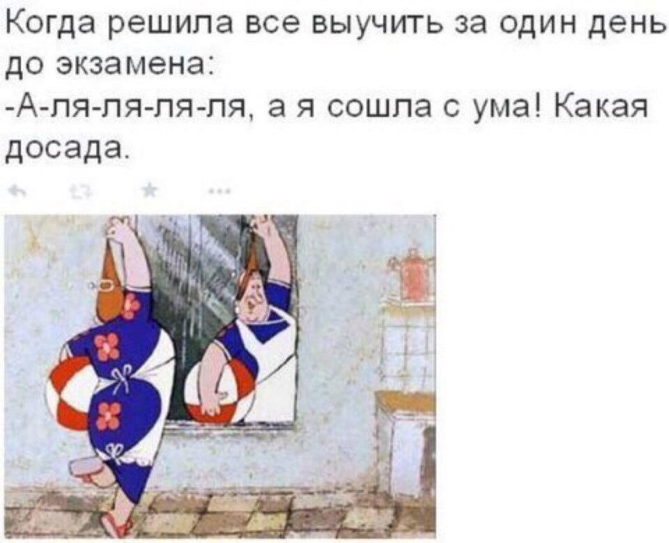

Пам-парам-пам! Перед Вами - мини-правила данной замечательной игры "Симулятор студента ФПМИ"! Почти только здесь (ну еще и непосредственно на ФПМИ) Вы сможете почувствовать себе студентом факультета прикладной математики и информатики некоего небезызвестного высшего учреждения образования!
Все очень просто: Ваша цель - выжить!
Нажав на кнопку "Играть!" Вы становитесь абстрактным студентом и попадете на информационный экран, где можете увидеть основную информацию о себе: курс, этап обучения (семестр/сессия/каникулы), уровень таких навыков как программирование, английский и т.д.
Вверху расположена информация о том, как у Вас обстоят дела с учебой, здоровьем, количеством денег, энергией и голодом, а также о том, сколько недель Вы уже проучились.
Кликая на иконки в нижней части экрана Вы сможете перейти на экраны Еды, Образования, Досуга, на которых необходимо выбрать, как Вы будете жить на следующей неделе. Выбирая то или иное действие, знайте: оно каким-то образом изменяет Ваши основные характеристики, а также может вызвать какое-либо рандомное действие, уведомление о котором Вы увидите на информационном экране.
Некоторые действия могут быть недоступными ввиду недостаточного "количества" образования или здоровья, а, например, в разделе Досуга при выборе кого-либо из Ваших друзей для совместного времяпрепровождения плюсы, которые приносят действия, возрастают. Будьте социальными!
Если же Ваши характеристики на нуле - игре конец.
В Настройках можно включить фоновую музычку, оставить комплимент разработчикам либо перейти по ссылочке в репозиторий проекта, чтобы поглазеть на код.
Выбрав то, чем будете заниматься на этой неделе, вернитесь на информационный экран и жмакните на кнопку "Прожить неделю!"
